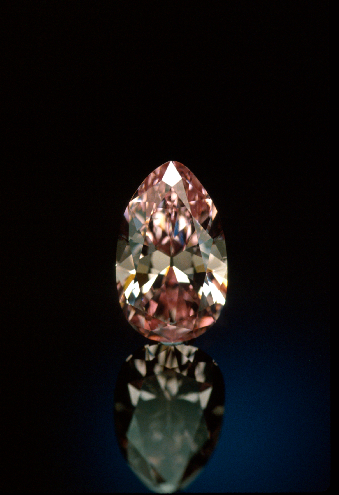
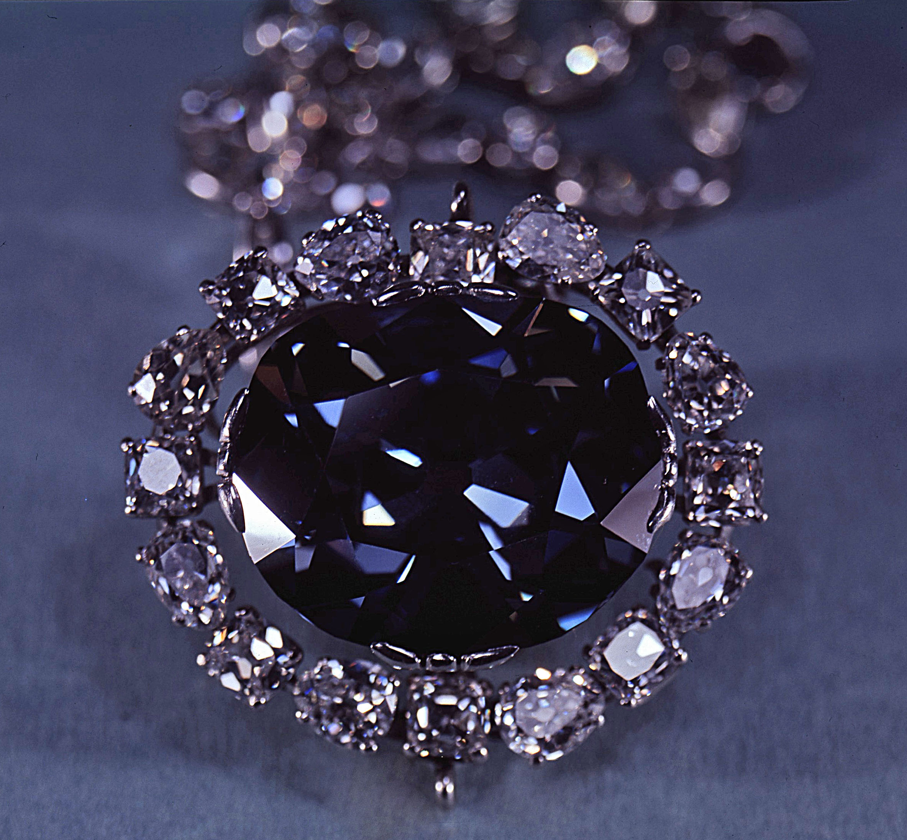

Hover over any circle to see the breakdown of the total carats of all of
the
gems
in the
Smithsonian’s collection, and the types of gems in that color.
Click on any color to see an additional breakdown of color variations within that specific
color.
Use the dropdown to look specifically at a certain type of gemstone.
Explore by Color
The Smithsonian boasts one of the largest - and most colorful - gem collections
in the world. Here, we explore all of the different shades and hues within the collection.
Hover over any color to see the breakdown of the total carats of all of the
gems
in the
Smithsonian’s collection, and the types of gems in that color.
Click on any color to see an additional breakdown of color variations within that specific
color.
Use the dropdown to look specifically at a certain type of gemstone.
Notable Gems in the Collection
The Smithsonian’s collection is home to some of the most famous and valuable gems in the world. Here, we
explore some of the most notable pieces in the collection.
Scroll to see some highlights, and learn more about their backstories.


What are Gems?
How are they different from Minerals?
Gems are a type of mineral that is cut and polished to be used in jewelry or
other decorative items. They are prized for their beauty, rarity, and durability. Gems are often
used to
symbolize wealth, power, and status. The Smithsonian’s collection includes a wide variety of gems
from all
over the world, including diamonds, rubies, emeralds, and sapphires. Each gem has its own unique
properties
and characteristics that make it special.